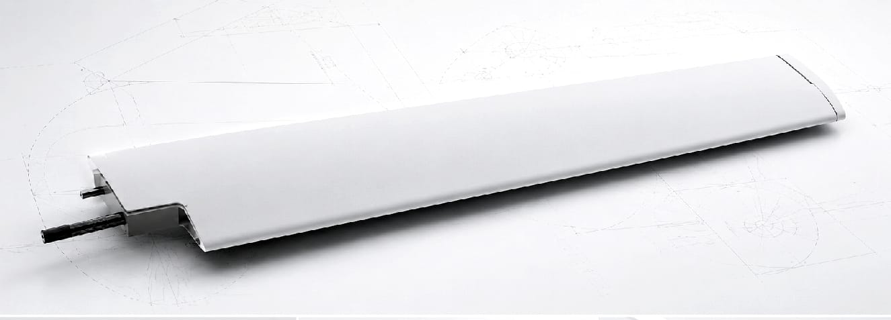

MultiLayer◇
Construcción por capas para ajustar prestaciones. Producción industrial de grandes series y piezas de gran formato sin juntas.
Producción en masa
Categoría industrial: diseñado para producción a gran escala, con altos volúmenes y ciclos de fabricación cortos.
Construcción por capas
Permite ajustar las prestaciones mediante tecnología multicapa, combinando materiales y propiedades en una misma estructura.
Bajo peso
Densidades bajas en comparación con otras soluciones estructurales de prestaciones equivalentes.
Versátil
Una misma plataforma tecnológica resolviendo aplicaciones muy distintas, del componente aeronáutico a la infraestructura.

Piezas de gran tamaño, sin juntas
La construcción multicapa permite fabricar en una sola pieza geometrías que otros procesos obligan a dividir y unir. Se eliminan juntas, uniones mecánicas y los puntos débiles asociados.
Piezas de hasta 10 metros en continuo: fuselajes, carenados, estructuras aerodinámicas, cascos y soportes de gran formato.
Tabla de prestaciones
| Propiedad | Valor típico / descripción | Norma u observación |
|---|---|---|
| Composición del material | ||
| Matriz polimérica | Resina termoestable técnica con grafeno funcionalizado | Tecnología propietaria · Pat. US11807761 |
| Refuerzos estructurales | Fibras de vidrio orientadas, fibras de carbono, híbridos | ISO 2078 |
| Nanorefuerzo | Grafeno funcionalizado | Pat. US11807761 |
| Microcargas funcionales | Microminerales y microcerámica | Tecnología propietaria |
| Aditivos | Estabilizantes UV, anti-hielo, retardantes de fuego | Según aplicación |
| Propiedades físicas y mecánicas | ||
| Densidad aparente | 0,1 – 1,95 g/cm³ | ISO 1183 · según aplicación |
| Módulo de elasticidad (flexión) | 30 – 150 GPa | ISO 14125 |
| Resistencia a tracción | 450 – 1.100 MPa | ISO 527-4 |
| Resistencia a flexión | 400 – 1.200 MPa | ISO 14125 |
| Alargamiento a rotura | 2,5 – 6 % | ISO 527 |
| Conductividad eléctrica | Aislante (no conductor) | IEC 60093 |
| Resistencia al impacto | Alta. No fisuración bajo carga puntual | Ensayo según aplicación |
| Comportamiento ambiental | ||
| Resistencia UV | Alta (nanocompuestos) | ISO 4892-3 |
| Resistencia a la corrosión | Excelente en niebla salina y ambientes agresivos | ISO 9227 |
| Comportamiento en intemperie | Estable, sin mantenimiento | Verificado |
| Fungicidas / plagas | No requerido — material inerte | Sin tratamientos |
| Temperatura de servicio | −80 °C a +210 °C | Aplicación estándar |
| Sostenibilidad | ||
| Contenido renovable | Hasta 80 % materias primas vegetales/minerales | EPD Verified |
| Sustancias peligrosas | Libre de creosota, metales pesados y halógenos | Conforme REACH |
| Certificación ambiental | Declaración Ambiental de Producto (DAP) — AENOR | EN 15804:2020 |
| Huella de carbono | 0,02 kg CO₂e / año | DAP |
| Fin de vida útil | 95 % reciclable | DAP — AENOR |
Signature management en el propio material
MultiLayer es una plataforma composite multifuncional: puede integrar comportamiento estructural y reducción de firma electromagnética en el mismo material, sin recubrimientos añadidos.
Qué aporta
- Baja reflectividad electromagnética
- Alta absorción de energía radar
- Adaptación de impedancia con el aire
- Disipación de la energía absorbida en forma de calor controlado
- Bajo peso y buena resistencia mecánica
- Estabilidad térmica y ambiental
- Compatibilidad con geometrías curvas y estructuras composite
Arquitectura del sistema
| Capa | Función |
|---|---|
| Matriz polimérica | Resina base que une todo el sistema (epoxi, ureacrílicas) |
| Carga absorbente EM | Disipa energía radar: nanoscrolls de grafeno, ferritas, carbon black, CNT, carburo de silicio |
| Carga dieléctrica | Adapta la impedancia entre aire y material: alúmina, nanocerámicas, microesferas |
| Refuerzo estructural | Capa composite que aporta estabilidad mecánica: fibra de vidrio, aramida |
| Aditivos funcionales | Agentes tixotrópicos y dispersantes para estabilidad y procesabilidad |
Develop with MultiLayer
Cuéntanos el requisito y evaluamos si MultiLayer es la plataforma adecuada para tu aplicación.